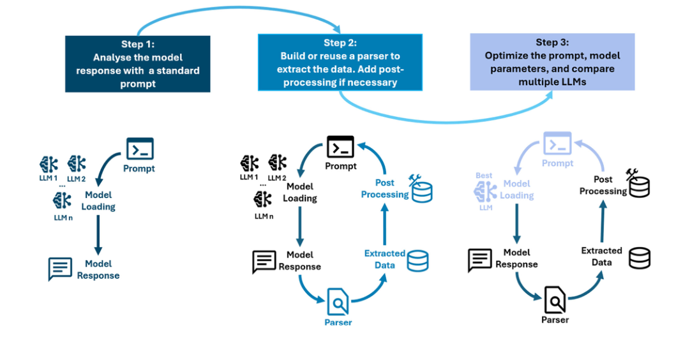
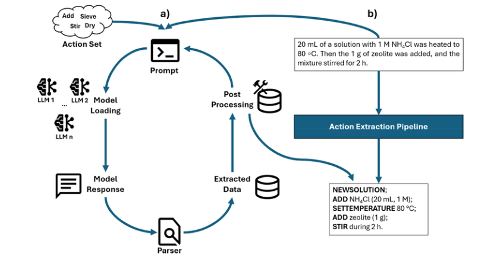
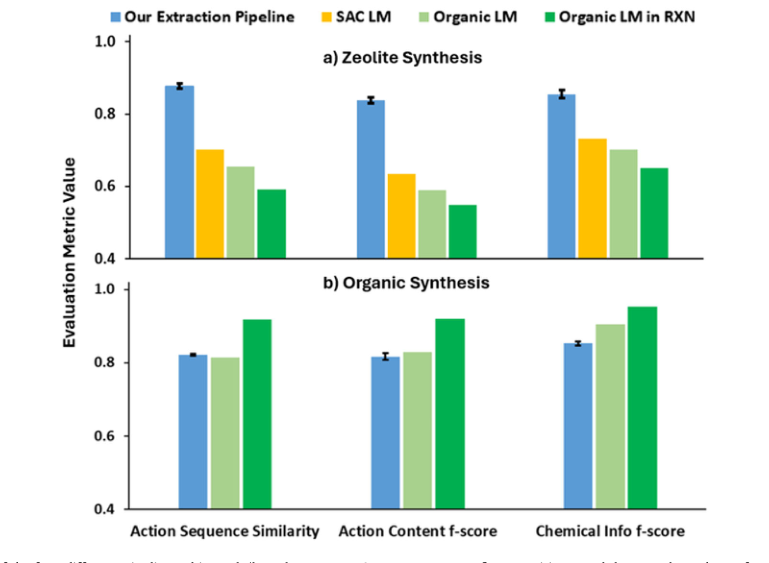
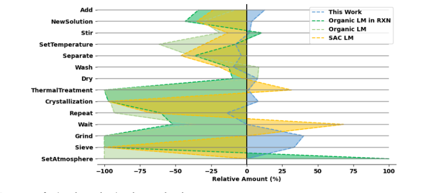
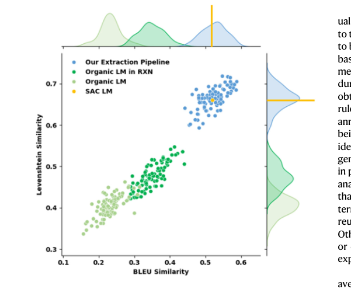

论文资料
A training-free, domain-extensible LLM-based approach for automated extraction of standardized preparation procedures
尚未取得可核实的完整摘要或全文
尚未取得可核实的完整摘要或全文。取得完整资料并通过核验后，这个地址会更新为图文解读。
原图未改动。以下图注来自标注的来源，不据此补写摘要未报告的实验结论。
已取得的论文原图


原文图注与出处
Fig. 7 | Step-by-step methodology to build an extraction pipeline from scratch: (1) test multiple model responses on a default prompt; (2) Add the parser and post-processing based on the responses; (3) Test multiple prompts, models,
Costa, Daniel P. et al.
原文图页 · CC BY-NC-ND 4.0

原文图注与出处
Fig. 1 | Laboratory action extraction pipeline structure overview (a) and example extracting laboratory actions from a zeolite synthesis paragraph (b). The overview is original and was built using Microsoft PowerPoint.
Costa, Daniel P. et al.
原文图页 · CC BY-NC-ND 4.0

原文图注与出处
Fig. 4 | Performance of the four different pipelines: this work (based on gemma-3- 12b-it), open-access LM for organic synthesis, LM for organic synthesis as in the RXN API, LM for single-atom catalyst synthesis over two different datasets for (a) zeolite synthesis; b organic synthesis (see Supplementary Table 5.2 for the data used). The performance metrics for our extraction pipeline correspond to the
Costa, Daniel P. et al.
原文图页 · CC BY-NC-ND 4.0

原文图注与出处
Fig. 5 | Relative Percentage of actions detected against the ground truth across the four different pipelines (This work is based on gemma-3-12b-it, an open- access LM for organic synthesis, an LM for organic synthesis in the RXN API,
Costa, Daniel P. et al.
原文图页 · CC BY-NC-ND 4.0已取得的论文原图


原文图注与出处
Fig. 6 | BLEU and Levenshtein ratio for the original model published by Vaucher et al.16 and its RXN version32,33, the model published by Suvarna et al.18, and one LLM tested on our pipeline using gemma-3-12b-it on the SAC action set. The area for the model published by Suvarna et al. is not representative. Source data are provided as a Source Data file.
Costa, Daniel P. et al.
原文图页 · CC BY-NC-ND 4.0